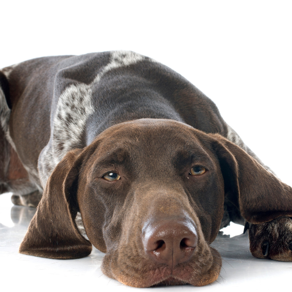
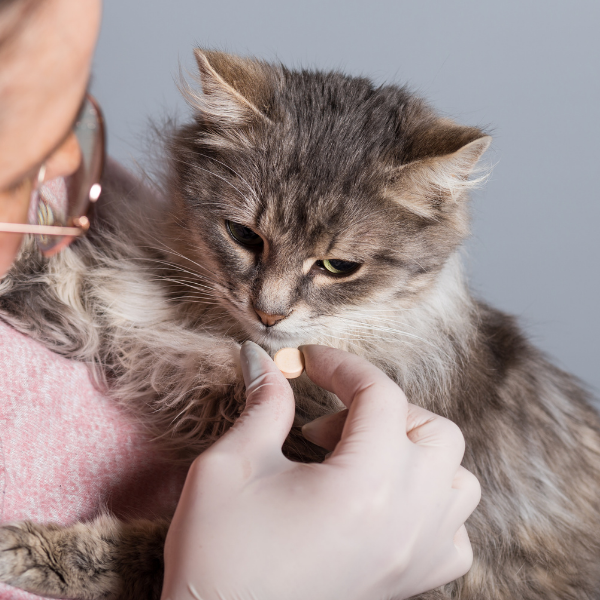

Desparasitación
Desparasitación Interna Perros Pequeños (< 10 kg)
Administración de antiparasitarios de amplio espectro para erradicar lombrices y gusanos intestinales en perros de razas pequeñas. Se ajusta la dosis con precisión al peso de tu mascota.
- Duración: 5 min
- Valor: $8.000
- Procedimiento seguro y rápido
Desparasitación Interna Perros Medianos (10-25 kg)
Tratamiento preventivo y curativo contra nematodos y cestodos. Fundamental realizarlo cada 3 meses para mantener la salud gástrica de tu perro de tamaño mediano.
- Duración: 5 min
- Valor: $9.500
- Producto de alta eficacia

Desparasitación Interna Perros Grandes (> 25 kg)
Dosificación especializada para caninos de razas grandes y gigantes. Garantiza una cobertura total contra parásitos internos utilizando comprimidos o jarabes de fácil asimilación.
- Duración: 5 min
- Valor: $11.000
- Evita enfermedades zoonóticas
Desparasitación Interna Felina
Los gatos requieren antiparasitarios con compuestos diseñados especialmente para su especie. La aplicación puede realizarse vía oral (comprimido/jarabe) minimizando el estrés del felino.
- Duración: 5 min
- Valor: $8.000
- Prevención de problemas intestinales

Antiparasitario Externo Pipeta (Perros y Gatos)
Aplicación tópica ("spot-on") de productos veterinarios para proteger a tu mascota contra pulgas, garrapatas, piojos y ácaros de la sarna. Realizamos la aplicación directamente en la clínica para garantizar su eficacia.
- Duración: 5 min
- Valor: $7.500
- Incluye producto y aplicación